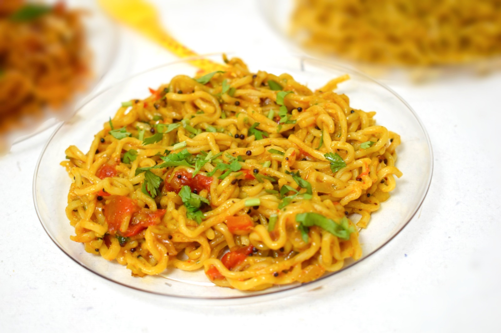

Maggi

Who doesn't love good old maggi
Maggi noodles cooked in a tempering of mustard seeds, onions and tomatoes is tadka Maggi. It is the kind of maggi which is loved by even those who are not fond of maggi (though such people won’t be many). The tempering gives a very typical flavour to maggi, the typical Indian flavour.
Ingredients
- Maggi Noodles
- Onions, Tomatoes
- Spices
- Coriander Leaves(for garnishing)
Steps
- Boil Maggi noodles : In a pan boil 3 cups of water. Break and put 1 pack of maggi noodles in it. Let it boil for 2 minutes. Strain the boiled noodles and keep aside.
- Prepare tempering and cook onions : Heat 2 tsp oil. Add 1/2 tsp mustard seeds. Let them crackle. Add 1 chopped onion and cook till translucent.
- Cook tomato, green chilli and spices : Add 1 chopped tomato. Cook till soft. .Add 1 chopped green chilli. Add 1 tsp coriander powder, 1/2 tsp red chilli powder, salt to taste and 1/4 tsp turmeric powder. Cook for 1 minute.
- Add boiled noodles and Maggi masala : Add boiled noodles. Add little water. Add Maggi masala. Mix well.
- Bon appétit : Garnish with chopped coriander. Serve tadka maggi hot with butter toast.